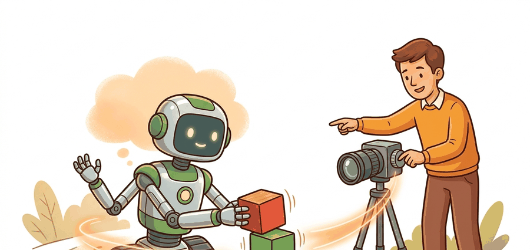

"Human preferences are the reward signal. All the usual problems now apply to a model of a person."
A Careful Control Loop

This section assumes familiarity with policy gradient optimization and PPO from section 15.4, since the reward model's scores are fed directly into a PPO fine-tuning loop. It also builds on the reward hacking failure modes catalogued in section 18.4, because a learned reward model is subject to all of those failure modes plus exploitation by the optimizing policy. The safety constraints introduced here are extended in section 18.6, which formalizes how preference-based rewards interact with hard constraint terms.
A warehouse robot clears a shelf perfectly, then knocks over a fragile box on the way back, every time. No hand-written reward caught it because nobody thought to penalize the return path. Now a human watches two thirty-second clips and picks the less reckless one. That single comparison is a training signal. Multiply it by thousands of such comparisons and the robot learns what "careful" actually means to the people who work beside it. Reinforcement Learning from Human Feedback (RLHF) is the only scalable way to transfer that kind of tacit human judgment into a control policy, and embodied AI is where the stakes are highest: the robot shares physical space with people. By the end of this section you will be able to build, audit, and harden a preference-based reward model so the policy cannot quietly game it.
When an Open X-Embodiment manipulation policy or an ANYmal locomotion controller from ETH Zurich is tuned against a learned preference reward, the reward must expose each force budget, clearance constraint, exploration bonus, and deployment risk as a separately auditable term, not bury them in one scalar return that a MuJoCo or Isaac Lab rollout can quietly inflate while a real gripper still scrapes the table.
This section develops the contract for reward models in embodied control. Figure 18.5A previews the whole loop: a human compares two short trajectory clips, that preference trains a reward model, and the reward model drives PPO fine-tuning of the policy. A learned reward model maps a trajectory segment $\tau$ to a scalar score $\hat R(\tau)$. The training data is not a numeric reward label for every state. It is usually a set of comparisons such as "clip A is safer, smoother, or more successful than clip B." In practice, a hand-written reward for a warehouse sorting task may require weeks of parameter tuning across hundreds of rollout hours, while preference labels from 500 clip comparisons can match or surpass that performance in a single overnight training run (Christiano et al., 2017; Lee et al., 2024).
The key question is practical: when should the builder trust learned preferences more than a hand-written reward, and how can the builder detect when the policy starts exploiting the reward model? Figure 18.5B traces the three-stage pipeline that answers this: collect comparisons, train the reward model, and optimize the policy under a KL penalty, with independent physical metrics auditing the model against exploitation.
Once a reward model is trained, the policy optimizes the model's scores, not the human raters directly. The model therefore needs the same audit discipline as any other reward: calibration, coverage, disagreement checks, and adversarial rollouts.
Theory
A common preference model uses a Bradley-Terry form. If a rater prefers trajectory $\tau_A$ over $\tau_B$, the model predicts
$$P(\tau_A \succ \tau_B)=\frac{\exp(\hat R(\tau_A))}{\exp(\hat R(\tau_A))+\exp(\hat R(\tau_B))}.$$
Training minimizes the negative log probability of the observed preference. In embodied control, the rater prompt must be precise: should the rater prioritize task completion, smoothness, speed, clearance from humans, object damage, or recovery behavior? A vague prompt trains a vague reward model.
Why this matters for physical robots. A robot acting in the world cannot roll back a mistake: a knocked object stays fallen, a bruised joint accumulates wear, a startled co-worker loses trust. The Bradley-Terry form captures ordinal human judgment rather than asking raters to assign precise numeric scores, which is unreliable for physical behaviors where magnitude is hard to judge but relative preference is clear. This makes it the right tool when the cost of a bad reward is irreversible physical harm rather than a recoverable software error. A reward model that a policy can fool is not a reward model; it is a scoreboard waiting to be gamed.
A common assumption is that human preference labels are reliable ground truth for physical safety because a rater is a real person making a judgment. That assumption is wrong. Raters compare short video clips. They cannot observe contact forces, internal joint torques, object deformation, or delayed wear. Those effects may appear seconds or minutes after the clip ends. A trajectory can look smooth and careful to every rater and still accumulate damage or create a safety hazard the camera never captures. Preference labels measure what is visually legible to a human observer, not what is physically safe. Always pair the reward model score with independent instrumented metrics: force sensors, collision logs, and intervention records. The preference signal is a starting point, not a safety certificate.
How it works in practice. A neural network takes a trajectory segment (states, actions, optionally sensor readings) as input and outputs a scalar score. For each labeled pair, the network receives both clips, computes both scores, and the Bradley-Terry formula converts the score gap into a predicted preference probability. Backpropagation through the negative log-likelihood loss adjusts the weights so that clips the raters preferred reliably receive higher scores. After enough labeled pairs the network generalizes: it scores new clips it has never seen, providing a reward signal the PPO loop then maximizes. To appreciate the leverage, consider that learning a comparably expressive reward through random environment exploration alone typically requires on the order of 50,000 rollout episodes, while 500 carefully chosen human comparisons can produce the same signal quality in a single overnight run (Christiano et al., 2017): the human rater condenses a hundred-fold more environmental experience into each labeled pair than the agent could stumble onto by itself.
Preference learning moves reward design from equation writing to data design. The core artifacts are the rater protocol, the comparison dataset, the reward-model validation set, and the policy rollouts that test whether the model is being exploited.
Algorithm: RLHF Reward-Model Training and Policy Fine-Tuning
Input: reference policy $\pi_{\text{ref}}$, trajectory dataset $\mathcal{D}$, rater rubric $\rho$, KL coefficient $\beta$, learning rate $\alpha$, reward-model parameters $\theta$
Output: fine-tuned policy $\pi_\theta$, audited reward model $\hat{R}_\theta$
- Write rater rubric $\rho$ with ranked criteria and a tie-breaking rule before any data collection begins.
- Sample trajectory pairs $(\tau_A, \tau_B)$ from $\mathcal{D}$, covering successes, failures, near-misses, and recoveries; collect human label $y \in \{A, B\}$ for each pair.
- Train $\hat{R}_\theta$ by minimizing the Bradley-Terry negative log-likelihood: $\mathcal{L}(\theta) = -\mathbb{E}\bigl[\log P_\theta(\tau_y \succ \tau_{\neg y})\bigr]$ where $P_\theta(\tau_A \succ \tau_B) = \sigma\!\left(\hat{R}_\theta(\tau_A) - \hat{R}_\theta(\tau_B)\right)$.
- Validate $\hat{R}_\theta$ on a held-out comparison set; record pair accuracy, calibration, and inter-rater agreement rate.
- Probe the reward model with adversarial rollouts: score visually smooth trajectories that contain hidden contact or force violations to detect blind spots.
- Initialize fine-tuning policy $\pi$ from $\pi_{\text{ref}}$ and run PPO with reward $r(s,a) = \hat{R}_\theta(\tau) - \beta\, \mathrm{KL}\!\left[\pi(\cdot|s) \,\|\, \pi_{\text{ref}}(\cdot|s)\right]$.
- At each PPO update, compute policy gradient $\nabla_\phi J(\phi) = \mathbb{E}_{\tau \sim \pi_\phi}\!\left[\nabla_\phi \log \pi_\phi(a|s)\, r(s,a)\right]$ and update $\phi \leftarrow \phi + \alpha\,\nabla_\phi J(\phi)$.
- Save high-reward rollouts after each PPO epoch and inspect them with independent physical metrics (contact cost, force proxy, intervention rate).
- If any high-reward rollout fails an independent metric, flag reward-model exploitation: add targeted comparison pairs covering that failure mode and retrain $\hat{R}_\theta$.
- Report final policy $\pi_\theta$ using task success, safety cost, and human intervention rate, not reward-model score alone.
Worked Example
Suppose raters prefer a slower grasp that avoids scraping the table over a faster grasp that succeeds but collides. Code Fragment 1 computes the probability assigned to the preferred clip and the corresponding loss.
# Compute one preference-model loss for two trajectory clips.
# The preferred clip should receive the higher learned reward score.
from math import exp, log
reward_safe = 1.4
reward_fast_collision = 0.2
prob_safe_preferred = exp(reward_safe) / (exp(reward_safe) + exp(reward_fast_collision))
loss = -log(prob_safe_preferred)
print("P(safe preferred)=", round(prob_safe_preferred, 3))
print("preference_loss=", round(loss, 3))reward_safe and reward_fast_collision stand in for reward-model scores on two clips. The lower preference_loss shows that the model assigns higher probability to the rater's preferred safe trajectory.Expected output: the probability should rise when the preferred clip receives a higher score. If the score gap grows on training data but fails on held-out clips, the reward model has memorized the comparison set rather than learned the rater's criterion.
Use preference-learning or RLHF tooling for batching comparisons, training reward models, and logging rater agreement, but keep the embodied artifacts close: clips, state traces, collision logs, intervention flags, and final task metrics. The tool can train the scorer; it cannot decide what the rater should value.
Practical Recipe
- Define the rater rubric before collecting comparisons.
- Sample diverse trajectory pairs, including failures, recoveries, near misses, and easy successes.
- Track rater disagreement and remove or investigate ambiguous pairs.
- Validate the reward model on held-out clips and adversarial high-score rollouts.
- Report policy performance using task success and safety costs, not reward-model score alone.
A learned reward model can be hacked by the policy that optimizes it. If the model learned that smooth-looking video implies safety, the policy may learn visually smooth motions that hide contact forces or damage. Always evaluate optimized policies with independent physical metrics.
Think of the KL penalty as a leash on a sports coach scouting new plays. The coach (reward model) was trained by watching footage of familiar game situations, so she gives reliable assessments only for plays that resemble what she has already seen. If a player ventures into completely novel territory, her scores become guesswork, however confident they sound. The KL penalty keeps the team's strategy close enough to the reference playbook that the coach is always judging situations within her experience, preventing the team from drifting into exotic formations she cannot honestly evaluate.
When running PPO against a learned reward model, set the kl_coef parameter (typically 0.01 to 0.1) to penalize large KL divergence from the reference policy. Without this penalty, the optimizer quickly pushes the policy into out-of-distribution territory where the reward model's Bradley-Terry scores become unreliable extrapolations rather than calibrated preferences. A common symptom is a rapid spike in reward-model score followed by catastrophic policy collapse: the model is being queried on behavior it never saw during the comparison-collection phase. Start with kl_coef=0.05 and tighten it if you observe high-score rollouts that fail independent task metrics.
For a home-assistance robot, raters might compare two clips of placing a cup on a table. The rubric should say whether a slow but careful placement beats a fast placement with a hard contact, and the logged artifact should include force or contact proxies so the reward model can be checked against physical evidence.
A reward model is a judge with a very large clipboard. The policy will eventually learn which boxes on the clipboard matter and which real-world details the judge forgot to ask about.
1. VLM-as-reward-model for physical manipulation (2024-2025). Vision-language models are being used as zero-shot or few-shot reward functions in place of human comparison labels. Rocamonde et al. (2024, "VLAD: Vision-Language Alignment via Distillation") and the EUREKA system (Ma et al., 2024, ICLR) from NVIDIA demonstrate that GPT-4 and similar models can generate reward code from task descriptions and iterate using environment feedback, reducing human labeling to high-level specification. The key challenge is preventing the VLM from scoring perceptually plausible but physically unsafe motions.
2. Scalable reward model training from large robot datasets (2024-2025). The Open X-Embodiment Collaboration (2024, ICRA) collected over 1 million robot trajectories across 22 platforms; subsequent work from Google DeepMind (RT-2-X and successors) uses this breadth to pretrain reward models that transfer across embodiments without re-collecting pairwise comparisons on each hardware platform. Direct Preference Optimization (DPO) variants adapted for robot trajectories (such as Robot DPO, Lee et al., 2024) replace the explicit reward-model training step with a contrastive policy update, cutting the pipeline from three stages to two.
3. Active and efficient preference elicitation (2024-2026). Work from the Berkeley AI Research lab and CMU (including PREF-RLHF benchmarks, 2024) shows that Bayesian active learning over the comparison pool can match 1,000-label baselines with 200-300 carefully chosen pairs in dexterous manipulation tasks. Uncertainty-aware reward models, where the network outputs a distribution over reward values rather than a point score, allow the training loop to automatically request comparisons only for trajectory pairs where the model is genuinely uncertain, cutting annotation cost without sacrificing policy quality.
Open problem for PhD students. All three directions above assume that the rater's preferences are stationary across the training run. In practice, rater calibration shifts as the policy improves: behaviors that looked impressive early in training become baseline expectations later, compressing the signal at the top of the reward distribution. Designing a preference-elicitation protocol that explicitly tracks and compensates for rater drift over multi-week robot training campaigns is an open research problem with direct deployment consequences.
Can you state the rater rubric, the disagreement rate, the held-out validation result, and the independent deployment metric? If not, the learned reward model is under-audited.
Learned rewards are most useful when the desired behavior is hard to write as a formula but easy for trained raters to compare. Smooth recovery, respectful distance, gentle contact, and task style often fit this pattern. They are least useful when the rater cannot observe the relevant evidence, such as hidden force, internal wear, or a delayed safety consequence.
The graduate-level habit is to treat reward-model optimization as a distribution shift. The model is trained on comparison clips, then the policy searches for actions that maximize it. High reward-model scores should therefore trigger adversarial review, uncertainty checks, and independent embodied metrics.
| Tool or Library | Role in the Topic | Builder Advice |
|---|---|---|
| Preference data tool | Comparison collection | Use it to present clips consistently and store rater IDs, rubric version, and disagreement. |
| Gymnasium | Policy optimization | Use consistent environments so reward-model scores and task metrics come from the same rollouts. |
| MuJoCo | Hidden physical checks | Log contact, force proxies, and object state so visual preferences can be audited. |
| LeRobot | Clip and dataset management | Connect comparison labels to demonstrations, replay videos, and policy rollouts. |
| ROS 2 | Hardware validation | Record real controller and safety topics when reward-model policies move beyond simulation. |
A robust implementation records the human-labeling process as carefully as the RL run. Without the rater protocol and comparison distribution, a learned reward score is not interpretable.
- Write a rater rubric with ranked criteria and tie rules.
- Collect comparison pairs across easy, hard, unsafe, and ambiguous cases.
- Train the reward model and report held-out pair accuracy plus calibration.
- Optimize the policy under the reward model while saving high-score rollouts.
- Evaluate with independent success, safety, and intervention metrics.
Code Fragment 2 records the minimum audit fields for a learned reward used in control.
# Build one preference-reward audit record for control.
# The fields connect human labels, model validation, and policy evaluation.
from dataclasses import dataclass, asdict
@dataclass
class PreferenceRewardAudit:
section: str
rater_rubric: str
validation_check: str
exploitation_probe: str
deployment_metrics: list[str]
def as_row(self) -> dict[str, object]:
return asdict(self)
record = PreferenceRewardAudit(
section="18.5",
rater_rubric="prefer task success, then gentle contact, then smooth recovery",
validation_check="held-out pair accuracy plus disagreement review",
exploitation_probe="top reward-model rollouts inspected for hidden contact",
deployment_metrics=["task_success", "contact_cost", "human_intervention_rate"],
)
print(record.as_row())PreferenceRewardAudit record ties the rater rubric to validation, exploitation probes, and deployment metrics. The exploitation_probe field is essential because optimizing a reward model creates new behaviors the raters may never have labeled.When a learned reward policy fails, assign the failure to rater ambiguity, dataset coverage, reward-model overfitting, optimization exploit, or missing physical evidence. Then add comparison pairs that target that failure and rerun the policy evaluation on the same seed panel.
For learned reward models, compare reward-model score, task success, safety cost, rater-agreement diagnostics, and intervention rate only when they are co-computed in one pass on one configuration. Save comparison data, rubric version, reward-model checkpoint, policy checkpoint, traces, and failure labels in one artifact.
A learned reward model is useful when it captures human judgment that a formula missed, and safe enough only when optimized policies still pass independent embodied metrics.
Design a rater rubric for a robot pouring task. Include three comparison criteria, one tie rule, one hidden physical metric the rater cannot see, and one exploitation probe for the trained reward model.
Project Ideas
Beginner (weekend): Preference-trained gripper reward in Gymnasium. Build a tabletop pick-and-place environment in Gymnasium with a MuJoCo backend, collect 200 pairwise trajectory comparisons by hand (rating clips for contact gentleness), train a small MLP reward model using Bradley-Terry loss, and fine-tune a PPO policy against it. The key challenge is writing a rater rubric tight enough that 200 labels produce a consistent reward signal rather than noise. Intermediate (1-2 weeks): RLHF reward audit pipeline for a MuJoCo manipulation task. Using MuJoCo's contact-force API and a LeRobot dataset of robot arm trajectories, build a full audit loop: collect 1,000 preference pairs, train a reward model, run PPO fine-tuning, then automatically flag any high-reward rollout whose contact cost exceeds a logged threshold. The key challenge is closing the loop between the reward-model score and independent physical metrics so exploitation is caught before deployment. Intermediate-to-advanced (2 weeks): Cross-embodiment reward transfer with ROS 2 validation. Train a preference reward model on simulation rollouts from Isaac Lab, then transfer the frozen reward model to a physical robot publishing sensor data over ROS 2 topics, and measure whether the policy's contact and intervention metrics hold up on hardware. The key challenge is the sim-to-real gap in proprioceptive features: the reward model was trained on simulated joint torques that differ systematically from real hardware sensor readings.
What's Next?
This section showed how preferences can become a learned reward while introducing new audit requirements. Next, Section 18.6 separates reward maximization from hard safety constraints and cost budgets.
Ng, A. Y., Harada, D., and Russell, S. (1999). Policy invariance under reward transformations. ICML.
Potential-based shaping is a formal contrast to learned reward models. It shows a case where reward changes have a policy-invariance guarantee, while preference rewards require empirical validation.
Andrychowicz, M. et al. (2017). Hindsight Experience Replay. NeurIPS.
HER is a useful comparison point because it changes labels in replay, while preference learning changes the reward estimator. Both require clear separation between training signal and final evaluation.
Amodei, D. et al. (2016). Concrete Problems in AI Safety. arXiv.
The reward-hacking categories apply directly to learned reward models. A policy can exploit the model's blind spots even when the original labels came from humans.
Christiano, P. F. et al. (2017). Deep reinforcement learning from human preferences. NeurIPS.
This is the central paper for learning rewards from human preferences. It motivates the comparison-loss formulation and the audit need for held-out clips, rater agreement, and optimized-policy review.
Safety Gym is relevant because human raters may not observe every safety cost. Explicit cost channels give an independent check on policies optimized against learned rewards.
Farama Foundation Safety Gymnasium documentation.
Safety Gymnasium helps evaluate learned-reward policies with separate safety costs. It is a practical way to catch reward-model exploitation that looks acceptable in video comparisons.